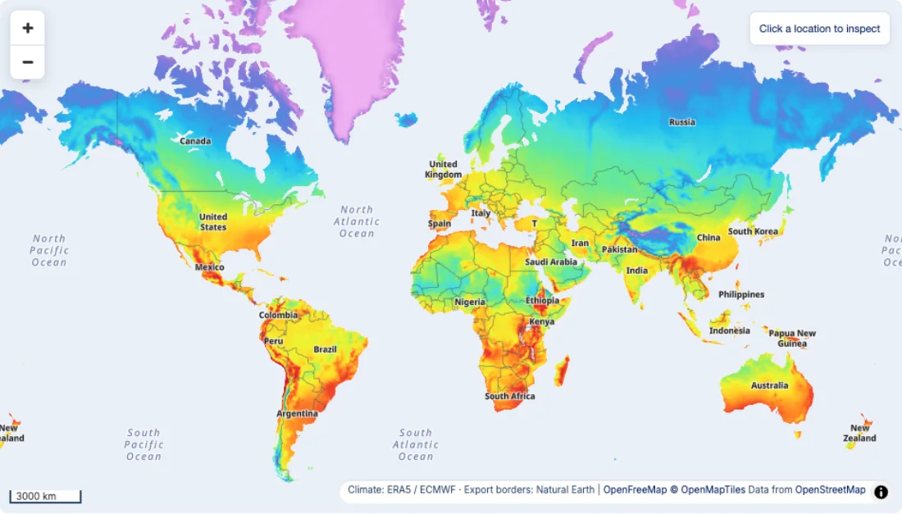
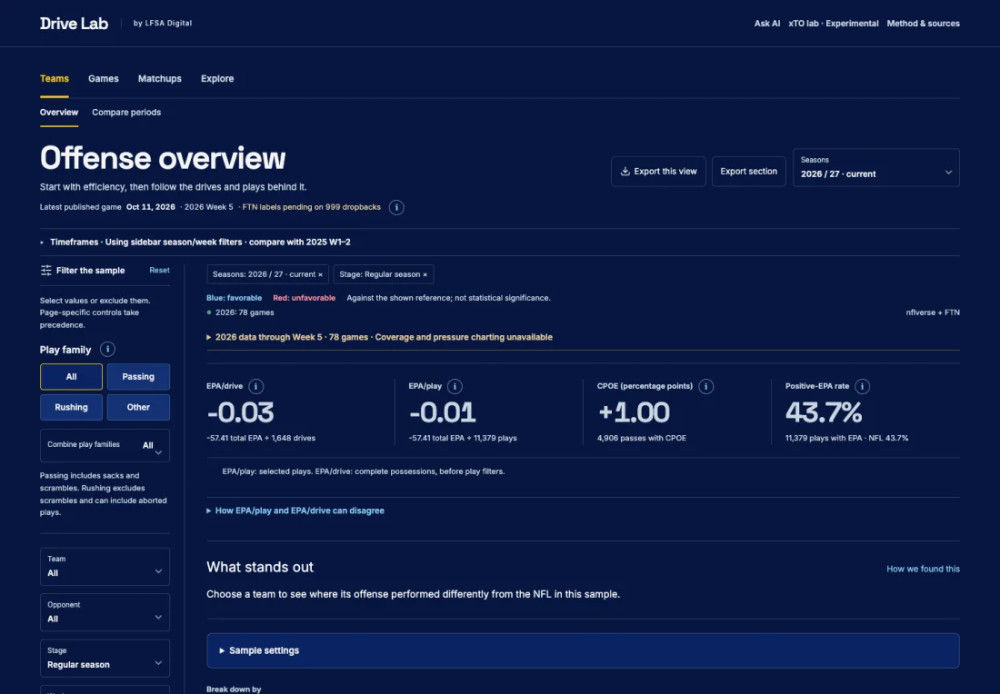

Comfy Days
Where would you feel comfortable?
Explore weather around the world. Choose your temperature, rain and sunshine preferences, then compare places and find your comfy days.
Weather · Maps · City discovery
Explore Comfy Days (opens in a new tab)

Comfy Days · App preview
Drive Lab
What makes an NFL offense work?
Go beyond the final score. Compare teams, explore matchups, and follow the drives and plays behind offensive performance.
NFL · Team analysis · Play-by-play
Explore Drive Lab (opens in a new tab)

Drive Lab · App preview
Atlas · Votes & violence
How do voting and violence vary across Brazil?
Explore Brazilian election results and municipal violence rates per 100,000 people. Compare places, elections and changes over time.
Elections · Violence · Maps · Public data